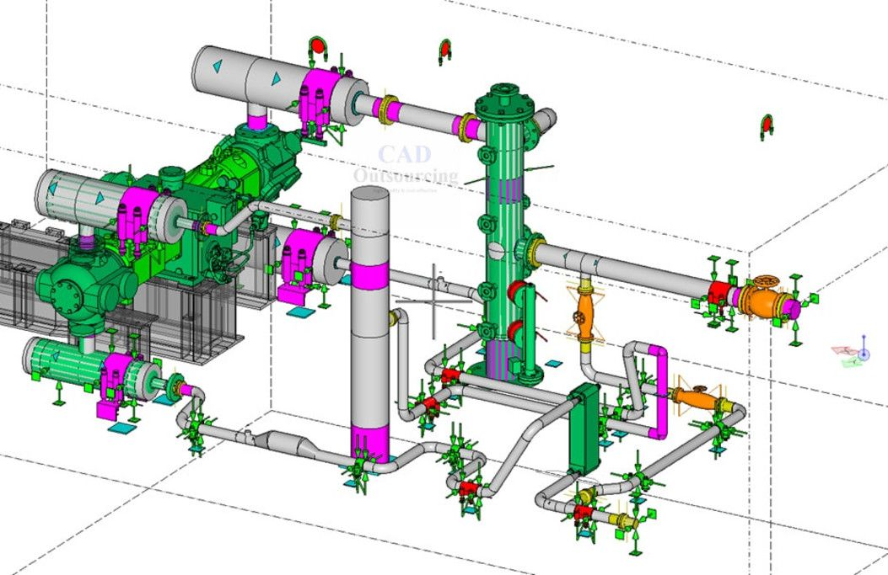

Digital Fabrication

A process that uses digitized information to facilitate the fabrication of construction materials or assemblies.
Some uses of digital fabrication can be seen in sheet metal fabrication, structural steel fabrication, pipe cutting, prototyping for design intent reviews etc. It assists in ensuring that the downstream phase of manufacturing has minimum ambiguities and enough information to fabricate with minimal waste. An information model could also be used with suitable technologies to assemble the fabricated parts into the final assembly.
Potential Value
- Ensuring quality of information
- Minimize tolerances through machine fabrication
- Increase fabrication productivity and safety
- Reduce lead time
- Adapt late changes in design
- Reduced dependency on 2D paper drawings
Resources Required
- Design Authoring Software
- Machine readable data for fabrication
- Fabrication methods
Team Competencies Required
- Ability to understand and create fabrication models
- Ability to manipulate, navigate, and review a 3D model
- Ability to extract digital information for fabrication from 3D models
- Ability to manufacture building components using digital information
- Ability to understand typical fabrication methods